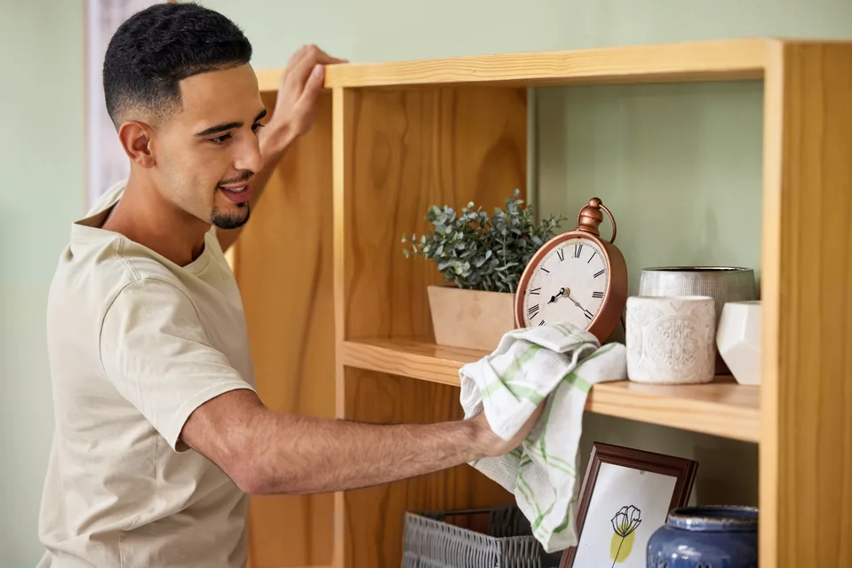

01 / Home care
Detailed First Clean

A thoughtful beginning.
For homes that need a little extra attention, we’ll begin with a detailed clean before settling into a regular routine. It gives us a chance to learn your home, take care of the buildup, and create a clean foundation that’s easier to maintain moving forward.
Let’s talk about your home